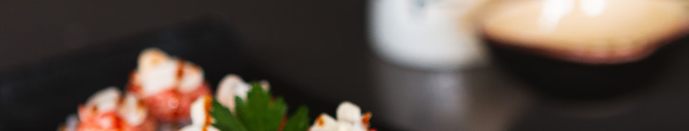
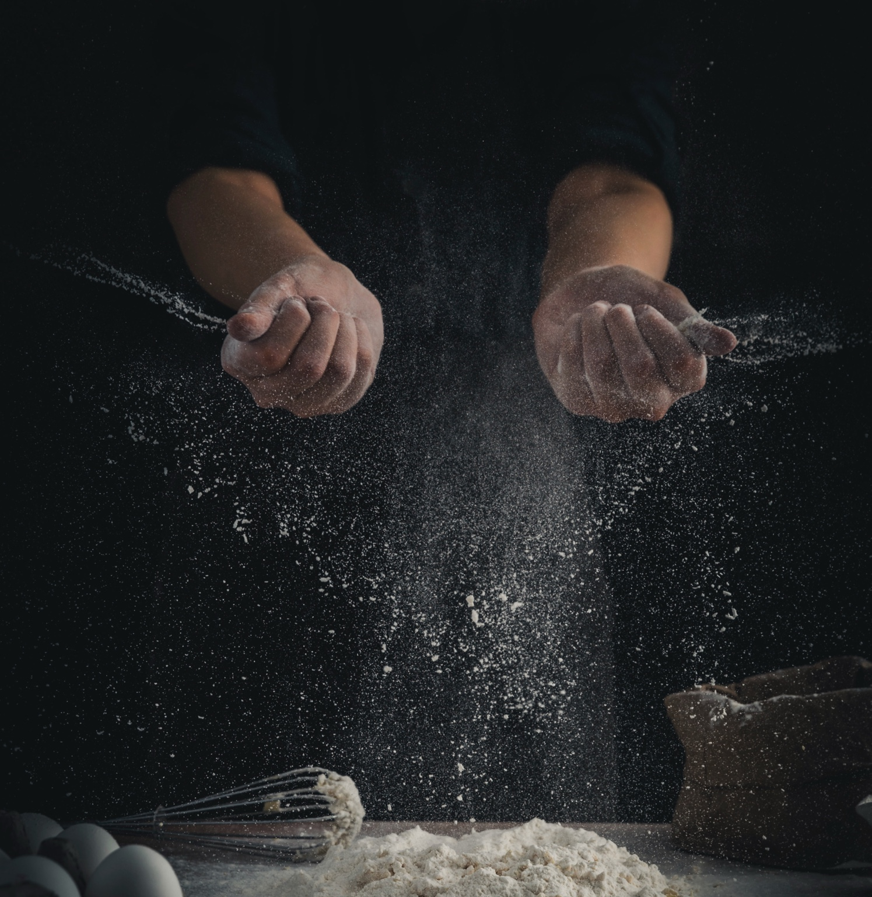

/config
Foundational coherence for brands that refuse to grow by accident.
We are retained to examine the logic beneath behaviour, recalibrate it where necessary, and restore internal alignment. We design systems that allow decisions to survive growth.
/kernel
The business brain, behind the scenes.
What we do is not creative theatre or managerial housekeeping. We get a kick out of the unglamorous work of making a business legible to itself.

/log
When the next phase matters, but the path is not yet clear.
We establish the conditions under which decisions stop bottlenecking, priorities remain stable, and work proceeds without constant recourse to the founder.
Our engagements are corrective by design; they prevent improvisation from metastasising into a permanent modus operandi.
For some organisations, this is liberating. For others, it is uncomfortable. Both are viable outcomes.
Explore our case studies/user
Our clients are brands that already possess standing, cultural credibility, or commercial traction.
The founders are often carrying too much privately, with discretion concentrated in one person, standards interpreted unevenly, and an increasing recognition that the foundations must now be set deliberately for the next stage of growth.
What unites them is scale. It’s the point where improvisation begins to carry consequence.
/ping
Action beats uncertainty.
If something in your business needs attention, bring it to us.
We’ll tell you honestly whether we’re the right partner.
Let's talk